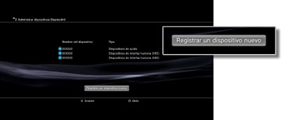

Ajustes > Ajustes de accesorios > Administrar dispositivos Bluetooth®
Administrar dispositivos Bluetooth®
Es posible registrar o emparejar dispositivos compatibles con Bluetooth® en el sistema PS3™. También puede gestionar los dispositivos Bluetooth® que conecte al sistema.
Registro de un dispositivo compatible con Bluetooth®
1. |
Prepare el dispositivo compatible con Bluetooth® y la clave. |
|---|---|
2. |
Seleccione |
3. |
Seleccione [Administrar dispositivos Bluetooth®]. |
4. |
Seleccione [Registrar un dispositivo nuevo].  |
5. |
Seleccione [Iniciar escaneo]. |
6. |
Seleccione el dispositivo que desee registrar o emparejar con el sistema PS3™. |
 (Ajustes) >
(Ajustes) >  (Ajustes de accesorios).
(Ajustes de accesorios).Notas
- Si está utilizando el máximo número de mandos a distancia inalámbricos, elimine los dispositivos que no utilice de la lista de dispositivos registrados para liberar espacio para el nuevo dispositivo Bluetooth®.
- Para obtener más información acerca del dispositivo compatible con Bluetooth®, consulte las instrucciones suministradas con dicho dispositivo.
Administración de dispositivos Bluetooth®
Consulte información acerca de los dispositivos compatibles con Bluetooth® que se encuentran conectados al sistema PS3™ o bien conecte y desconecte los dispositivos. Después de seleccionar el dispositivo que desee administrar, pulse el botón  y, a continuación, seleccione las opciones del menú de opciones.
y, a continuación, seleccione las opciones del menú de opciones.